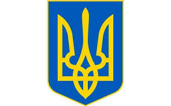

Державна символіка України
- Державний герб України — тризуб — є унікальним символом, що походить ще з часів Київської Русі. Він символізує силу, волю та незалежність українського народу. Тризуб є знаком єдності і духовної спадщини країни.

- Прапор України складається з двох горизонтальних смуг: верхня — синя, що символізує мирне небо, а нижня — жовта, що уособлює родючі пшеничні поля. Ці кольори відображають природну красу та багатство української землі.

- Державний гімн України — "Ще не вмерла Україна" — є гімном надії та боротьби за свободу. Він надихає українців на патріотизм і збереження незалежності, підкреслюючи силу духу та любов до Батьківщини.
Назад